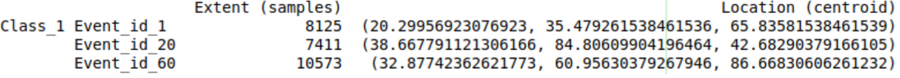
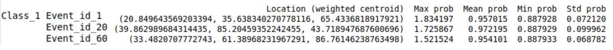

Characterization
For extreme events Classification, the toolbox provides a post-processing step of data characterization. Characterization is a methodology for summarising and describing the characteristics of a priori aggregated locations that constitute the events. When activated, this post-processing stage provides a .txt file with the following statistics:
Extent or the number of locations (pixels) covered by the event.
Centroid and weighted Centroid.
Maximum, minimum and mean probabilities provided by the model in the event region.
Input Parameters
To use this funcionality, use the following code snippet in your configuration file:
characterization:
activate: True
params:
time_aggregation: ...
min_distance: ...
remove_scant: ...
min_area_holes: ...
min_area_objects: ...
threshold:
Metric: {...}
threshold_lower_is_best: ...
time_aggregation: Aggreggate through time, if test samples are taken chronologically ,type: bool
min_distance: Maximum Euclidean distance between centroids to be connect, to deactivate it, set to zero (default), type: int
remove_scant: Remove scant labels by filling small holes and small objects, type: bool
min_area_holes: Size of the holes to remove when remove_scant set to True, type: int
min_area_objects: Size of the objects to remove when remove_scant set to True, type: int
threshold > Metric: Metric to optimize the threshold, by default takes a value of 0.5, type: TorchMetric
threshold_lower_is_best: Sets the direction that means improvement, type: bool
Outputs
Example of .txt file generated after executing the Characterization module:
 {kind=link}
{kind=link}